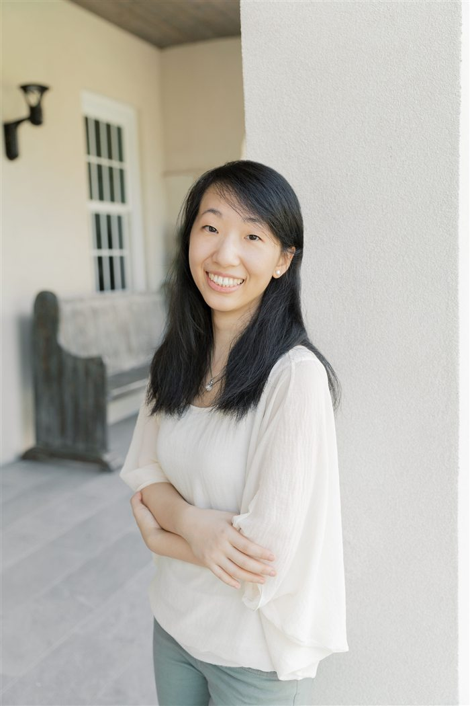

Meet Angela Hsu
Angela Hsu has been teaching piano for over nine years, including the past two years in Nashville, Tennessee, and several years in her hometown of Gulfport, Mississippi. Teaching is her passion - whether it is introducing beginners to their first notes at the keyboard, helping advanced students explore the artistry and nuances of great musical works, or sharing the joy of piano playing with adult learners. Angela strives to create engaging and inspiring lessons that help every student reach their full potential.
She graduated from Thomas Edison State University in 2014 with a Bachelor of Arts in Music, emphasis on Piano Performance, and furthered her training in piano pedagogy under the instruction of Jane Baldridge.
Having begun her piano studies at a young age, Angela was also blessed to learn from dedicated teachers, including Carmen Yeh, Sherry Hsu, Dr. Jasmin Arakawa, and Zhaolei Xie. Their influence continues to shape her teaching, inspiring the encouragement, high standards, and love of music she brings to every lesson.
As a dedicated and dynamic teacher, Angela is committed to lifelong improvement of herself. She regularly explores new teaching methods, pedagogical approaches, and educational tools via workshops, professional development, and collaboration with fellow music educators. She is an active member of her local, state, and national Music Teachers Associations. Her goal is to provide every student with a high-quality, well-rounded music education.
In addition to teaching, Angela has served as a church pianist for numerous years and has also accompanied vocalists, instrumentalists, choirs, concerts, and special events.
Soli Deo Gloria.

Without music, life is a journey through a desert.
Teaching Philosophy
Angela believes that every student, regardless of age, can flourish with music through patient guidance, consistent practice, and joyful learning. Her aim is to build a strong foundation in piano technique, note-reading, and listening skills while nurturing musical understanding, creativity, confidence, and artistic expression.
Every lesson is thoughtfully tailored to each student's unique personality, interests, and goals. Above all, she hopes her students will not only become capable independent pianists but also develop a genuine love for music and have a skill they can enjoy for a lifetime.